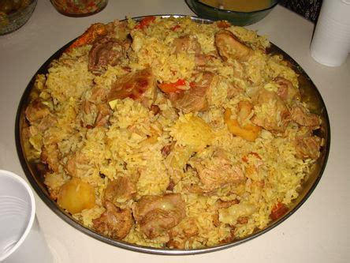

Palestinian Chicken Maqluba

Description
Maqluba is a common dish in Palestine and other Arab countries, such as Syria, Jordan, Iraq, and Lebanon. The word "Maqluba" literally translates to "upside-down". It consists of layers of meat, rice and vegetables that are arranged in a pot to cook, which is later flipped upon a plate upon serving with a cake-like appearance.
Maqluba is often served with salad and fresh yogurt. Common salad varieties are Salata Arabiyeh, Khiyar Bi Laban, or Fattoush.
Ingredients
For the Rice
- 3 cups Jasmine Rice
- 1 large head of cauliflower
- 2 large russet potatoes
- 5 cups chicken broth
- 1 tablespoon maqluba spice
- 1 Tomato - optional
- 1 teaspoon of 7 Spice
- 11/2 teaspoon of salt
For the Broth
- 2 small chickens, skinless, cut into quarters.
- water, to cook the chicken
- 3 tablespoons of oil
- 1 medium onion, cut in half
- 5 cloves of garlic
- 3 tablespoons of maqluba spice
- 2 tablespoons of 7 Spice
- 1 tablespoon of coriander powder
- 1 stick of cinnamon
- 4 cardamom pods
- 2 teaspoons of salt
- 1/2 teaspoon black pepper
- 6 cups of chicken broth (reserve from cooking the chicken)
Steps
- Add the chicken to a pot with oil and onions, then sauté.
- Add the maqluba spices, whole garlic, black pepper, cinnamon, coriander, and cardamom and mix.
- Add water to cover. Let it boil and skim off any foam that forms and discard. Let it cook for about 30-40 minutes until done.
- Once the chicken is cooked, remove it and strain the broth. You can now leave the chicken as it is, bake it to crips it up, or fry it.
- Wash the rice a few times to make sure the starches are removed. Soak in cold water for about 30 minutes.
- Once soaked, strain and add the 7 spices, maqluba spices, and salt. Mix well and set aside.
For Veggies
- Prep your vegetables ahead of time.
- Cut the cauliflower into medium sized florets, peel the potatoes, and cut them into 1/2-inch thick rounds.
- For the eggplants, you can peel them or leave the skin. Cut into 1/2-inch rounds and place on top of a paper towel.
- Sprinkle a small amount of salt on top of each round to draw out the moisture, about 10 minutes.
For Assemlbly
- For assembly, cut parchment paper to the same size as the bottom of the pot you're using and lay it flat.
- Add tomato slices, then layer the chicken on top. Add the vegetables and finally the rice.
- Now once your maqluba is assembled, make sure to add HOT broth. You don't want it to be warm or cold.
- Let it boil on medium-high heat, then cover and lower the heat until the rice is fully cooked, anywhere from 15-25 minutes. The rice on top should be fluffy and cooked.
- To achieve the perfect Maklouba flip, let the dish rest for a few minutes after cooking to help the ingredients set. Use a large, flat serving platter and gently run a spatula or knife around the edges of the pot to loosen it. Then, carefully flip the pot upside down onto the platter. The key here is to not disturb the pot too much before flipping to keep it all piled up before flipping.
Special Reference Notes
Please note that the original source for this recipe was written by Fatimah at "Falasteeni Foodie". I did not create this recipe and I take no credit for this; all credit is due to Fatimah. You can find her original recipe with a wealth of far more information here. Please consider this a respectful tribute to Fatimah and other Palestinians who are working to keeping the authentic cuisine and culture of Palestine vibrant and alive. FREE PALESTINE!
Home